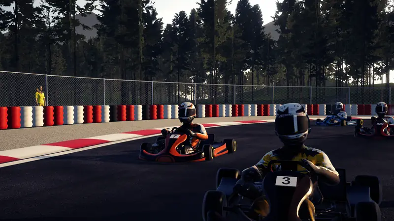
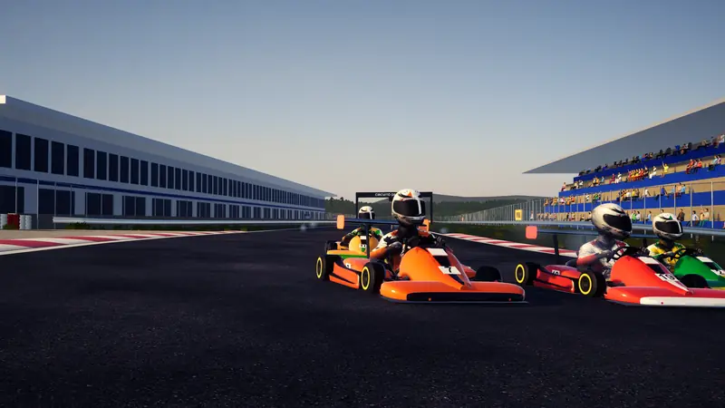
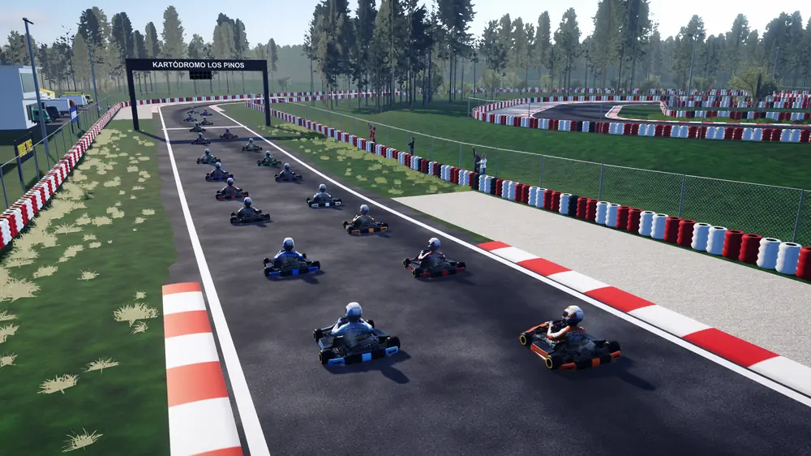
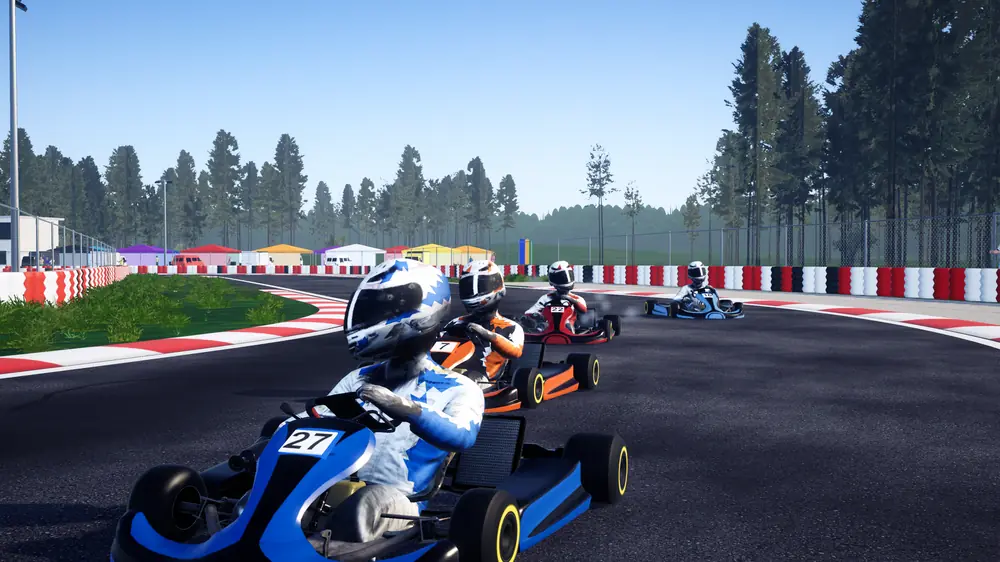

Étape 1/6
Étape 1/6Location 4T
VORTEX R-390
Lourd, docile et chaussé de pneus durs. Les soirées en kart de location, c'est là que tout commence.
- Moteur4 temps
- Puissance11 hp
- BoîtePrise directe

Commence en kart de location et grimpe les vraies catégories du karting jusqu'au Superkart 250 cm³. Vraie physique, grilles de 20 karts et courses sous la pluie, sur iPhone, iPad et Mac.

 BientôtApp Store · iPhone et iPadBientôtMac App StoreBientôtGoogle Play
BientôtApp Store · iPhone et iPadBientôtMac App StoreBientôtGoogle PlayEn cours de validation chez Apple : bientôt disponible sur iPhone, iPad et Mac.
Gratuit sur iPhone, iPad et Mac. Bientôt sur Android.
Tiens ton téléphone à l'horizontale à deux mains et tourne-le. En mode VOLANT, tu es assis dans le kart : l'horizon reste droit, le volant tourne entre tes mains et tu sens chaque vibreur grâce au retour haptique.
Vue cockpit et téléphone en guise de volant, avec les pédales d'accélérateur et de frein sous les pouces.
Tu préfères la méthode classique ? Passe au joystick à l'écran ou à l'inclinaison dans les Réglages.
Connecte une manette Bluetooth (PlayStation, Xbox et MFi). Sur Mac, pilote au clavier ou à la manette, avec vibrations.
La carrière suit les vraies catégories du karting. Tu pars toujours du fond de la grille : décroche une médaille et l'épreuve suivante s'ouvre ; une médaille en Finale et tu passes à la catégorie supérieure.
Étape 1/6Lourd, docile et chaussé de pneus durs. Les soirées en kart de location, c'est là que tout commence.
 Étape 2/6
Étape 2/6Léger et vif : ton premier championnat avec licence, face à des pilotes qui ne lâchent rien.
 Étape 3/6
Étape 3/6125 cm³, sans boîte, embrayage centrifuge. C'est là que les écuries commencent à te repérer.

Étape 4/6Plus de puissance, mêmes réflexes. Les meilleurs pilotes du pays en championnat national.
 Étape 5/6
Étape 5/6Boîte séquentielle à six rapports, freins avant et l'élite internationale. La catégorie reine du karting.

Étape 6/6Carénage intégral et plus de 200 km/h sur de vrais circuits. Ce qui se fait de plus rapide, assis à quelques centimètres du sol.
Touche EN LIGNE et cours contre d'autres pilotes sur la même piste. Les joueurs connectés s'affrontent et l'IA remplit les places libres : la course part toujours avec 20 karts, même si tu es seul.
 Cometa 7
Sol 19
Cometa 7
Sol 19
Une touche : tu rejoins une salle ouverte, une course déjà lancée ou tu en crées une nouvelle.
Choisis la catégorie et le circuit. La salle attend 60 secondes, ou touche DÉMARRER.
Prends le kart de la dernière IA avec ses tours, tant que le leader n'a pas passé la mi-course.
Chaque humain est un vrai kart sur la piste : défends, frotte les roues et bats-toi à chaque virage.
Choisis un pseudo dans la liste et roule. Gratuit, sans inscription, avec des stats en ligne : courses, victoires et podiums.
Un serveur en Europe pour tout le monde : téléphones, tablettes et Mac courent dans les mêmes salles.
Real Karting tourne sur son propre moteur physique, écrit de zéro pour les karts, avec des aides réglables : apprends d'abord, puis coupe-les.
 Pluie
PluieL'adhérence s'envole, les vibreurs deviennent des patinoires et les gerbes d'eau masquent le kart devant toi. Au moins une course sur le mouillé par catégorie, avec des gouttes sur ta visière.
Un modèle de pneus avec glissement, transferts de masse, aspiration et vibreurs, simulé 500 fois par seconde. Chaque catégorie a son poids, sa puissance et son adhérence.

Pars du fond et fraie-toi un chemin parmi 19 rivaux (12 karts en Superkart).

L'IA suit la trajectoire idéale de chaque circuit, défend, cherche l'ouverture et craque sous la pression.

Matins, midis, après-midi dorés et couchers de soleil, avec de vrais ciels sur chaque site.
Ressens les vibreurs, l'herbe, les pneus qui glissent, les bosses et chaque contact.
Couleurs, numéro de course, finitions de peinture, néon et fumée colorée, tout se gagne avec des médailles. Aucune boîte aléatoire.
Des pistes de location sinueuses, des circuits de karting au milieu des pins, au bord de la mer et à flanc de colline, et quatre grands circuits pour le Superkart. La plupart se courent aussi en sens inverse.
El Parque et La Marina pour les soirées location ; Los Pinos, Del Puerto, La Vega, Polígono Norte et La Cumbre pour les championnats.
Circuito del Valle, Circuito de la Costa, Sierra Alta et La Fundición : longues lignes droites et courbes rapides à plus de 200 km/h.
Oui. Real Karting se télécharge et se joue gratuitement, sans pub, sans boîte aléatoire et sans rien à acheter pour gagner : tout le monde court avec le même kart, et le meilleur pilote gagne.
iPhone, iPad et Mac (version macOS native). Une version Android arrive bientôt.
Oui. Touche EN LIGNE pour une course rapide, crée ta salle ou rejoins une course en cours, avec de vrais pilotes et l'IA pour compléter la grille. C'est gratuit et sans compte. Le mode carrière reste jouable hors ligne.
Tiens ton téléphone à l'horizontale à deux mains et tourne-le comme un volant. Les pédales d'accélérateur et de frein sont sous tes pouces, et le mode VOLANT t'offre une vue cockpit avec l'horizon droit. Tu peux passer au joystick ou à l'inclinaison dans les Réglages.
Oui. Tu peux connecter une manette Bluetooth (PlayStation, Xbox et MFi) sur iPhone, iPad et Mac. Sur Mac, tu peux aussi piloter au clavier.
Pas pour le mode carrière : il fonctionne entièrement hors ligne et sans compte, et ta progression est enregistrée sur ton appareil. Seul le mode en ligne, facultatif, nécessite une connexion.
C'est une simcade : la physique est réelle (pneus, transferts de masse, aspiration, un réglage différent pour chaque catégorie), mais les aides permettent à tout le monde de s'amuser dès le premier tour. Coupe-les et pilote comme un pro.
Six vraies catégories : Location 4T, Cadet 60 cm³, Junior 125, Senior 125, KZ avec boîte six vitesses et le Superkart 250 cm³ sur les grands circuits.
Français, anglais, espagnol, allemand, portugais et italien.
Non. Le jeu n'a ni outil de statistiques, ni pub, ni pistage, et ne collecte aucune donnée personnelle. Consulte la politique de confidentialité.
Télécharge Real Karting et transforme ton téléphone en volant.
BientôtApp Store · iPhone et iPadBientôtMac App StoreBientôtGoogle PlayEn cours de validation chez Apple : bientôt disponible sur iPhone, iPad et Mac.
Gratuit sur iPhone, iPad et Mac. Bientôt sur Android.
Un bug, une idée ou quelque chose qui ne marche pas ? Écris-nous, on te répondra.
Indique ton appareil et la version du jeu (affichée en bas à droite du menu principal). Astuce : si le jeu rame, choisis une qualité plus basse dans RÉGLAGES > GRAPHISMES ; si tu sors souvent de la piste, augmente les aides.
Écris-nous